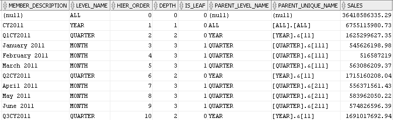
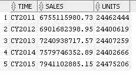
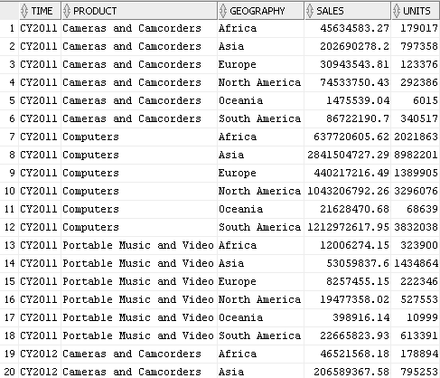
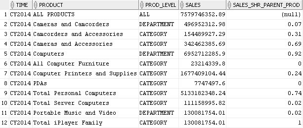
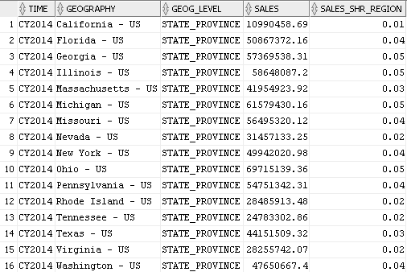
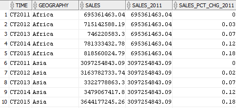
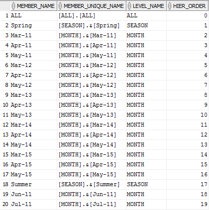
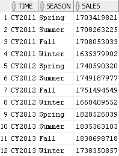

26 Analytic View Objects
An analytic view encapsulates aggregations, calculations, and joins of fact data that are specified by attribute dimensions and hierarchies and by measures.
An analytic view can be used in the FROM clause of a SQL SELECT statement.
Analytic views are described in the following topics.
26.1 About Analytic Views
Measures of an analytic view may be derived directly from a column in a fact table or they may be calculated expressions. The rows produced by a query of the analytic view are determined by the rows in the fact table and the aggregate rows provided by hierarchies. Measure calculations affect the columns in the analytic view.
A cell (or row) of the analytic view is uniquely identified by the combination of the MEMBER_UNIQUE_NAME attributes of each of the hierarchies. The metadata for the analytic view contains information about which columns in the fact table are joined to columns in the attribute dimensions for a hierarchy.
An analytic view is defined by specifying the following:
-
The data source
-
Fact columns from the data source
-
Attribute dimensions with attributes that correspond to the fact columns and that determine the rows of the analytic view
-
Hierarchies that participate in the analytic view
-
Any number of measures
An analytic view also has the following optional characteristics:
-
Can specify sharing its metadata or itself with an application container
-
Can specify a materialized view as a cache for the aggregated values of one or more measures.
26.2 Attribute Dimensions and Analytic Views
The attribute dimensions determined by hierarchies provide the dimension table columns for analytic views.
Typically, there is one attribute dimension for each dimension table in the star schema.
You specify an attribute dimension with a dim_key clause in the analytic view definition. You may specify an optional alias, which is required if you use the same attribute dimension more than once or if you use an attribute dimension with the same name from a different schema.
In the dim_key clause, with the KEY keyword you specify one or more fact columns from the data source that you are using. With the REFERENCES clause, you specify the attributes to which the KEY joins. The attributes must be either a key or alternate key attribute of a level. You may specify the same attribute dimension multiple times, as long as you give each instance a unique alias.
Each dim_key clause must include at least one hierarchy, which you specify in the HIERARCHIES clause. You may specify a hierarchy as the default hierarchy for the analytic view; otherwise, the first hierarchy in the definition is the default.
26.3 Hierarchies of Analytic Views
For each attribute dimension specified in a dim_key clause, an analytic view must include at least one hierarchy that uses it.
Each hierarchy forms another component of the overall contents of the analytic view. Each attribute dimension specified in the analytic view has one of the associated hierarchies designated as the default hierarchy. You can specify a default hierarchy with the DEFAULT keyword in the hier_ref clause; otherwise, the first hierarchy in the list is the default.
When an analytic view is queried, all hierarchies not referenced in the HIERARCHIES phrase of the FROM clause of the query are reduced to a single member that represents the aggregate value of that hierarchy. You can reference the columns of such a hierarchy in the query, but only one of the rows is exposed through the analytic view. The particular member chosen for that hierarchy depends on the other hierarchies defined using the same attribute dimension.
Every hierarchy includes an ALL member, which is the only member of the ALL level, and is the single root member of the hierarchy (that is, ALL is an ancestor of every other member in the hierarchy). Therefore, even if members at certain levels in a hierarchy do not determine members at any explicitly defined levels in any other hierarchy, they always at least determine the ALL member.
In a query, only one default hierarchy per attribute dimension is included. You can override the default hierarchies and specify any set of default hierarchies for an attribute dimension. You can specify multiple hierarchies for some attribute dimensions of an analytic view and not specify hierarchies for others. To override a default hierarchy, in the FROM clause of a SELECT statement, use the HIERARCHIES phrase to specify one or more hierarchies.
26.4 Measures of Analytic Views
Analytic view measures specify fact data and the calculations or other operations to perform on the data.
In an analytic view definition, you can specify a base measure or a calculated measure.
Base Measures
A base measure is a reference to a column in a fact table. You can optionally specify a meas_aggregate_clause, which overrides the default aggregation method of the analytic view. Each base measure can specify a default aggregation. The aggregation may be a simple operation like SUM or AVG, or a complex nesting of operations that vary by attribute dimension.
You can use the default_aggregate_clause to specify a default aggregation method for base measures that don't have a meas_aggregate_clause. The default value of the default_aggregate_clause is SUM.
Calculated Measures
A calculated measure is an expression that can be a user-defined expression or one of the many pre-defined analytic calculations. A calculated measure expression may include other measures, row functions, and hierarchy functions. Hierarchy functions allow computations based on identifying and processing related members in a hierarchy. The expression may reference other measures in the analytic view, but may not reference fact columns. Because a calculation can refer to other measures, you can easily build complex calculations through nesting.
In defining a calculated measure expression, you may use any other measure in the analytic view, irrespective of the order in which you defined the measures of the analytic view. The only restriction is that no cycles may be introduced in the calculations.
Categories of calculated measure expressions are the following:
-
Analytic view measure expressions
-
Analytic view simple expressions
-
Single row function expressions
-
Compound expressions
-
Datetime expressions
-
Interval expressions
Analytic view measure expressions include the following operations:
-
Lead and lag
-
Related member
-
Window calculations
-
Share of
-
Qualified data reference (QDR)
26.5 Create Analytic Views
In creating an analytic view, you specify one or more hierarchies and a fact table that has at least one measure column that can join to each hierarchy.
Create a Simple Analytic View
An analytic view must have a reference to a fact table and a measure that can join to a hierarchy.
Example 26-1 Creating a Simple Analytic View
This analytic view uses the TIME_HIER hierarchy and the SALE_FACT table. It contains a single measure, SALES.
CREATE OR REPLACE ANALYTIC VIEW sales_av
USING sales_fact -- Refers to the SALES_FACT table
DIMENSION BY -- List of attribute dimensions
(time_attr_dim -- TIME_ATTR_DIM attribute dimension
KEY month_id REFERENCES month_id -- Dimension KEY joins to fact column
HIERARCHIES ( -- List of hierarchies that use
time_hier DEFAULT)) -- the attribute dimension
MEASURES -- List of measures
(sales FACT sales) -- SALES measure references SALES column
DEFAULT MEASURE SALES; -- Default measure of the analytic view
A query that selects from an analytic view that does not include filters has the potential of returning large numbers of rows. However, in this query, the SALES_AV analytic view includes a single hierarchy that returns only returns 86 rows.
SELECT *
FROM sales_av HIERARCHIES(time_hier)
ORDER BY time_hier.hier_order;This is a excerpt of the returned values.
Description of the illustration simple_av_sel.png
Add Another Base Measure
To add another base measure to an analytic view, include the measure in the MEASURES list.
Example 26-2 Adding a Base Measure to an Analytic View
CREATE OR REPLACE ANALYTIC VIEW sales_av
USING sales_fact
DIMENSION BY
(time_attr_dim
KEY month_id REFERENCES month_id
HIERARCHIES (
time_hier DEFAULT))
MEASURES
(sales FACT sales,
units FACT units) -- Add the UNITS base measure
DEFAULT MEASURE SALES;Because a query of the analytic view could return a great many rows, a query typically uses filters to limit the results. In the WHERE clause, this query filters the time periods to those in the YEAR level, so it returns only SALES and UNITS data at that level..
SELECT time_hier.member_name as TIME,
sales,
units
FROM
sales_av HIERARCHIES(time_hier)
WHERE time_hier.level_name = 'YEAR'
ORDER BY time_hier.hier_order;
These are the returned values.
Description of the illustration av_sel_2measures.png
Add Hierarchies to an Analytic View
Typically, an analytic view has more than one hierarchy from one or more attribute dimensions.
Example 26-3 Adding Hierarchies to an Analytic View
This example adds attribute dimensions and hierarchies to the DIMENSION BY list of the analytic view.
CREATE OR REPLACE ANALYTIC VIEW sales_av
USING sales_fact
DIMENSION BY
(time_attr_dim
KEY month_id REFERENCES month_id
HIERARCHIES (
time_hier DEFAULT),
product_attr_dim
KEY category_id REFERENCES category_id
HIERARCHIES (
product_hier DEFAULT),
geography_attr_dim
KEY state_province_id
REFERENCES state_province_id
HIERARCHIES (
geography_hier DEFAULT)
)
MEASURES
(sales FACT sales,
units FACT units
)
DEFAULT MEASURE SALES;The following query adds the PRODUCT_HIER and GEOGRAPHY_HIER hierarchies to the HIERARCHIES phrase of the FROM clause.
SELECT time_hier.member_name AS Time,
product_hier.member_name AS Product,
geography_hier.member_name AS Geography,
sales,
units
FROM
sales_av HIERARCHIES (time_hier, product_hier, geography_hier)
WHERE time_hier.level_name in ('YEAR')
AND product_hier.level_name in ('DEPARTMENT')
AND geography_hier.level_name in ('REGION')
ORDER BY time_hier.hier_order,
product_hier.hier_order,
geography_hier.hier_order;The query returns 50 rows. The following image shows only the first 20 rows.
Description of the illustration av_sel_all_hiers.png
You can view and run SQL scripts that create the tables, the analytic view component objects, and the queries used in the examples from the Oracle Live SQL website at https://livesql.oracle.com/apex/livesql/file/index.html.
26.6 Examples of Calculated Measures
Calculated measures are expressions you add to a MEASURES clause of an analytic view in the form of measure_name AS (expression).
Add a LAG Expression
This example adds a calculated measure that uses a LAG operation to the SALES_AV analytic view.
Example 26-4 Adding a LAG Expression
CREATE OR REPLACE ANALYTIC VIEW sales_av
USING sales_fact
DIMENSION BY
(time_attr_dim
KEY month_id REFERENCES month_id
HIERARCHIES (
time_hier DEFAULT),
product_attr_dim
KEY category_id REFERENCES category_id
HIERARCHIES (
product_hier DEFAULT),
geography_attr_dim
KEY state_province_id REFERENCES state_province_id
HIERARCHIES (
geography_hier DEFAULT)
)
MEASURES
(sales FACT sales,
units FACT units,
sales_prior_period AS -- Add a calculated measure.
(LAG(sales) OVER (HIERARCHY time_hier OFFSET 1))
)
DEFAULT MEASURE SALES;Select the SALES and SALES_PRIOR_PERIOD measures at the YEAR and QUARTER levels.
SELECT time_hier.member_name as TIME,
sales,
sales_prior_period
FROM
sales_av HIERARCHIES(time_hier)
WHERE time_hier.level_name IN ('YEAR','QUARTER')
ORDER BY time_hier.hier_order;
In this excerpt from the query results, note that the LAG expression returns prior periods within the same level.
Description of the illustration av_calc_meas_lag.png
SHARE OF Expressions
Share of measures calculate the ratio of a current row to a parent row, ancestor row, or all rows in the current level; for example, the ratio of a geography member to the parent of the member. Share of measures are specified using the SHARE OF expression.
Example 26-5 Using SHARE OF Expressions
This example adds calculated measures that use SHARE OF operations to the SALES_AV analytic view.
CREATE OR REPLACE ANALYTIC VIEW sales_av
USING sales_fact
DIMENSION BY
(time_attr_dim
KEY month_id REFERENCES month_id
HIERARCHIES (
time_hier DEFAULT),
product_attr_dim
KEY category_id REFERENCES category_id
HIERARCHIES (
product_hier DEFAULT),
geography_attr_dim
KEY state_province_id REFERENCES state_province_id
HIERARCHIES (
geography_hier DEFAULT)
)
MEASURES
(sales FACT sales,
units FACT units,
-- Share of calculations
sales_shr_parent_prod AS
(SHARE_OF(sales HIERARCHY product_hier PARENT)),
sales_shr_parent_geog AS
(SHARE_OF(sales HIERARCHY geography_hier PARENT)),
sales_shr_region AS
(SHARE_OF(sales HIERARCHY geography_hier LEVEL REGION))
)
DEFAULT MEASURE SALES;The SALES_SHR_PARENT_PROD measure calculates the ratio of a SALES value at the CATEGORY or DEPARTMENT level to SALES of the parent in the PRODUCT_HIER hierarchy, such as the ratio of SALES for Total Server Computers to Computers.
This query selects SALES and SALES_SHR_PARENT_PROD measure for CY2014 at each level of the PRODUCT_HIER hierarchy.
SELECT time_hier.member_name AS Time,
product_hier.member_name AS Product,
product_hier.level_name AS Prod_Level,
sales,
ROUND(sales_shr_parent_prod,2) AS sales_shr_parent_prod
FROM
sales_av HIERARCHIES (time_hier, product_hier)
WHERE time_hier.year_name = 'CY2014'
AND time_hier.level_name = 'YEAR'
ORDER BY product_hier.hier_order;
The results of the query are:
Description of the illustration av_calc_meas_share.png
The SALE_SHR_REGION measure calculates the share of SALES at the STATE or COUNTRY levels to SALES at the REGION level, for example, the ratio of SALES for California – US to SALES for North America.
This query returns the values for the SALES and SALES_SHR_REGION measures for year CY2014 and states in the United States.
SELECT time_hier.member_name AS Time,
geography_hier.member_name AS Geography,
geography_hier.level_name AS Geog_Level,
sales,
ROUND(sales_shr_region,2) AS sales_shr_region
FROM
sales_av HIERARCHIES (time_hier, geography_hier)
WHERE time_hier.year_name = 'CY2014'
AND time_hier.level_name = 'YEAR'
AND geography_hier.country_name = 'United States'
AND geography_hier.level_name = 'STATE_PROVINCE'
ORDER BY geography_hier.hier_order;
This is the result of the query.
Description of the illustration av_calc_meas_share_region.png
QDR Expressions
A qdr_expression uses the QUALIFY keyword to limit the values of a measure to those for a single dimension member. An example is Sales for the year CY2011 or the percent difference in SALES between the current time period and CY2011. The QUALIFY expression refers to a KEY attribute value.
Limits the values of a measure to those for the single dimension members specified by the qualified data reference
Example 26-6 Using QUALIFY Expressions
Create the SALES_AV analytic view with the SALES_2011 and SALES_PCT_CHG_2011 measures.
CREATE OR REPLACE ANALYTIC VIEW sales_av
USING sales_fact
DIMENSION BY
(time_attr_dim
KEY month_id REFERENCES month_id
HIERARCHIES (
time_hier DEFAULT),
product_attr_dim
KEY category_id REFERENCES category_id
HIERARCHIES (
product_hier DEFAULT),
geography_attr_dim
KEY state_province_id REFERENCES state_province_id
HIERARCHIES (
geography_hier DEFAULT)
)
MEASURES
(sales FACT sales,
units FACT units,
-- Sales for CY2011
sales_2011 AS
(QUALIFY (sales, time_hier = year['11'])),
-- Sales percent change from 2011.
sales_pct_chg_2011 AS
((sales - (QUALIFY (sales, time_hier = year['11']))) /
(QUALIFY (sales, time_hier = year['11'])))
)
DEFAULT MEASURE SALES;Regardless of filters in the query, the SALES_2011 measure always returns data for the year CY2011. The SALES_PCT_CHG_2011 measure calculates the percent difference between the current time period and CY2011.
This query selects SALES, SALES_2011 and SALES_PCT_CHG_2011 at the YEAR and REGION levels.
SELECT time_hier.member_name AS Time,
geography_hier.member_name AS Geography,
sales,
sales_2011,
ROUND(sales_pct_chg_2011,2) as sales_pct_chg_2011
FROM
sales_av HIERARCHIES (time_hier, geography_hier)
WHERE time_hier.level_name = 'YEAR'
AND geography_hier.level_name = 'REGION'
ORDER BY geography_hier.hier_order,
time_hier.hier_order;This is an excerpt from the query results. Note that for each row SALES_2011 returns SALES for CY2011.
Description of the illustration av_calc_meas_qualify.png
26.7 Attribute Reporting
You can use any attribute of an attribute dimension in a hierarchy and aggregate data for it in an analytic view,.
You can use attributes to filter data or to display in a report. You can also break out (aggregate) data by an attribute. You can create calculated measures in an analytic view using the attribute; the analytic view then provides the aggregate rows for the attribute.
Example 26-7 Using the SEASON Attribute
This example first creates an attribute dimension that has SEASON and SEASON_ORDER as attributes. This allows a hierarchy and an analytic view to reuse some metadata of those attributes and to relate the attributes to other levels. For example, SEASON is determined by MONTH values.
-- Create a time attribute dimension with a SEASON attribute.
CREATE OR REPLACE ATTRIBUTE DIMENSION time_attr_dim
DIMENSION TYPE TIME
USING time_dim
ATTRIBUTES
(year_id,
year_name,
year_end_date,
quarter_id,
quarter_name,
quarter_end_date,
month_id,
month_name,
month_long_name,
month_end_date,
season,
season_order)
LEVEL month
LEVEL TYPE MONTHS
KEY month_id
MEMBER NAME month_name
MEMBER CAPTION month_name
MEMBER DESCRIPTION month_long_name
ORDER BY month_end_date
DETERMINES (quarter_id, season, season_order)
LEVEL quarter
LEVEL TYPE QUARTERS
KEY quarter_id
MEMBER NAME quarter_name
MEMBER CAPTION quarter_name
MEMBER DESCRIPTION quarter_name
ORDER BY quarter_end_date
DETERMINES (year_id)
LEVEL year
LEVEL TYPE YEARS
KEY year_id
MEMBER NAME year_name
MEMBER CAPTION year_name
MEMBER DESCRIPTION year_name
ORDER BY year_end_date
LEVEL season
LEVEL TYPE QUARTERS
KEY season
MEMBER NAME season
MEMBER CAPTION season
MEMBER DESCRIPTION season
ORDER BY season_order;Create a hierarchy in which MONTH is a child of SEASON.
CREATE OR REPLACE HIERARCHY time_season_hier
USING time_attr_dim
(month CHILD OF
season);
Select data from the TIME_SEASON_HIER hierarchy.
SELECT member_name,
member_unique_name,
level_name,
hier_order
FROM time_season_hier
ORDER BY hier_order;
In the results of the query, the TIME_SEASON_HIER hierarchy returns rows for the ALL level, SEASONS, and MONTHS. This image captures the first twenty of the rows returned.
Description of the illustration av_calc_meas_attr_report.png
The example next creates an analytic view that provides aggregate data for SEASON.
CREATE OR REPLACE ANALYTIC VIEW sales_av
USING sales_fact
DIMENSION BY
(time_attr_dim
KEY month_id REFERENCES month_id
HIERARCHIES (
time_hier DEFAULT,
time_season_hier),
product_attr_dim
KEY category_id REFERENCES category_id
HIERARCHIES (
product_hier DEFAULT),
geography_attr_dim
KEY state_province_id
REFERENCES state_province_id
HIERARCHIES (
geography_hier DEFAULT)
)
MEASURES
(sales FACT sales,
units FACT units
)
DEFAULT MEASURE SALES;You can now select SALES by YEAR and SEASON directly from the analytic view. This query selects from the TIME_HIER and TIME_SEASON_HIER hierarchies at the YEAR and SEASON levels.
SELECT time_hier.member_name AS Time,
time_season_hier.member_name AS Season,
ROUND(sales) AS Sales
FROM sales_av HIERARCHIES (time_hier, time_season_hier)
WHERE time_hier.level_name = 'YEAR'
AND time_season_hier.level_name = 'SEASON'
ORDER BY time_hier.hier_order,
time_season_hier.hier_order;This excerpt from the query results shows the first twelve rows returned.
Description of the illustration av_calc_meas_season_sales.png
You can view and run the SQL scripts that create the tables, the analytic view component objects, and the queries used in the examples from the Oracle Live SQL website at https://livesql.oracle.com/apex/livesql/file/index.html.